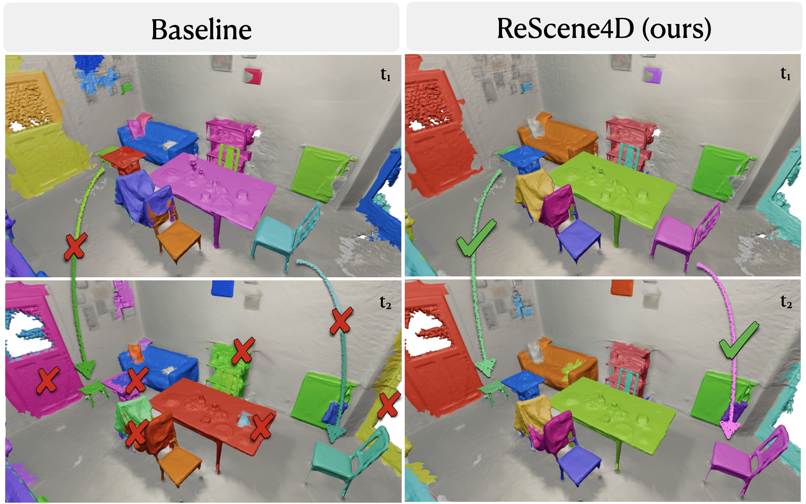

ReScene4D:
Temporally Consistent Semantic Instance Segmentation of Evolving Indoor 3D Scenes
ReScene4D achieves temporally consistent instance segmentation across sparsely captured 3D scans of evolving indoor scenes, with a new t-mAP metric and state-of-the-art results on 3RScan.
Abstract
Indoor environments evolve as objects move, appear, or leave the scene. Capturing these dynamics requires maintaining temporally consistent instance identities across intermittently captured 3D scans, even when changes are unobserved. We introduce and formalize the task of temporally sparse 4D indoor semantic instance segmentation (SIS), which jointly segments, identifies, and temporally associates object instances. This setting poses a challenge for existing 3DSIS methods, which require a discrete matching step due to their lack of temporal reasoning, and for 4D LiDAR approaches, which perform poorly due to their reliance on high-frequency temporal measurements that are uncommon in the longer-horizon evolution of indoor environments. We propose ReScene4D, a novel method that adapts 3DSIS architectures for 4DSIS without needing dense observations. Our method enables temporal information sharing—using spatiotemporal contrastive loss, masking, and serialization—to adaptively leverage geometric and semantic priors across observations. This shared context enables consistent instance tracking and improves standard 3DSIS performance. To evaluate this task, we define a new metric, t-mAP, that extends mAP to reward temporal identity consistency. ReScene4D achieves state-of-the-art performance on the 3RScan dataset, establishing a new benchmark for understanding evolving indoor scenes.

Method

ReScene4D adapts the mask-transformer architecture from Mask3D to temporally sparse 4D semantic instance segmentation. Given a sequence of 3D scans \(\mathcal{P} = \{P^{(1)}, \ldots, P^{(T)}\}\) of the same indoor scene at different times, we represent the input as a unified spatio-temporal 4D point cloud and extract hierarchical features per stage with a backbone encoder. Spatio-temporal instance queries are refined jointly across all stages via masked cross-attention and self-attention, and the mask module predicts binary instance masks and semantic labels that are consistent across the sequence. We evaluate three feature backbones (Minkowski, Sonata, Concerto) and temporal information-sharing strategies—including contrastive loss, spatio-temporal mask pooling, and spatio-temporal decoder serialization—without relying on geometric overlay or dense temporal sampling assumptions.
4D Semantic Instance Segmentation Results
We evaluate on the 3RScan dataset, which contains 478 unique indoor environments captured multiple times (1,428 scans total) with temporally consistent instance-level semantic annotations. We use our proposed t-mAP metric, which extends mAP to reward temporal identity consistency across scans, as well as per-stage mAP. ReScene4D outperforms Mask4D, Mask4Former, and Mask3D with post-hoc temporal matching, maintaining consistent instance identities across observations even when objects move or the scene changes.
BibTeX
@inproceedings{steiner2026rescene4d,
author = {Steiner, Emily and Zheng, Jianhao and Howard-Jenkins, Henry and Xie, Chris and Armeni, Iro},
title = {ReScene4D: Temporally Consistent Semantic Instance Segmentation of Evolving Indoor 3D Scenes},
booktitle = {Proceedings of the IEEE/CVF Conference on Computer Vision and Pattern Recognition (CVPR)},
year = {2026},
}Acknowledgements
This work is supported by the Stanford Institute for Human-Centered Artificial Intelligence (HAI), and E.S. is supported by supported by the TomKat Center for Sustainable Energy as a TomKat Center Graduate Fellow for Translational Research. Stanford’s Marlowe computing clusters provided GPU computing for model training and evaluation.